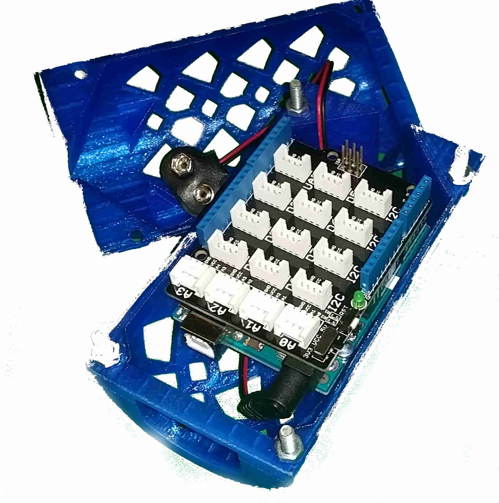

Magnitude.io has its offices at 2150 Allston Way, Berkeley, CA #400
The company Magnitude.io is dedicated to teaching students STEM (science, technology, engineering, and math) skills by having them work on CanSats, or compact satellites that are
about the size of a soda can. These satellites are launched on high altitude balloons at schools in the San Francisco Bay Area to over 100,000 feet into the atmosphere. They are equipped with sensors
that measure the pressure, temperature, humidity, CO2 concentration, and location of the satellites. This allows the students to track the
balloons and analyze the differences in the air at different altitudes.

Magnitude is a small company that consists solely of the CEO, Ted Tagami, and the COO, Tony So, as well as a board of directors that support and supervise the CanSat program.
As a result, the other interns and I have direct contact with the CEO.
My Experience with Magnitude
March-June 2016: I collaborated in a team of four people to develop code for the CanSats and add a carbon dioxide sensor to the project.
Our code has been used in at least two balloon launches: one in Lodi and one at San Leandro High School.
Summer 2016: I have an internship at Magnitude with two other interns, working on a project to design an air quality monitoring station.
This station, once complete, will consist of at least seven sensors that measure aspects such as temperature and humidity of and gas concentrations in the surrounding air.
I have contributed to the planning, design, and programming aspects of the project, which is nearing completion.
Once the air quality monitors are ready for production, they will be placed on the roofs of schools across San Leandro and later in other locations around the Bay Area.
We are currently collaborating with graduate students from the UC Berkeley Department of Radiology (more information here)
and the Bay Area Air Quality Management District.
Details about the Internship
Location:Barbara Lee Center: 2251 Bancroft Ave, San Leandro, CA
 Intern at
Magnitude.io
Intern at
Magnitude.io